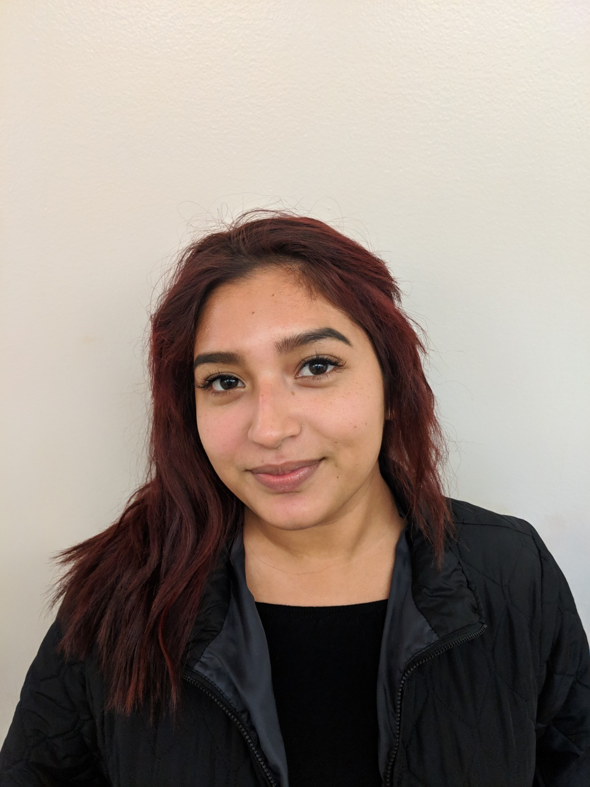

Gurmanjeet Singh

My name is Gurmanjeet Singh, and I was born in India, but I moved to the United States when I was 8 years old. In India, my family was very poor, and my parents worked day and night to support me and my siblings. They chose to move to the United States because they wanted their children to have a better future. They gave up on their own dreams so that I could reach for mine, and because of this I will always work hard to be the better version of myself so that I can give back to my parents for everything that they have given to me. When my family was moving to the United States, my older sister could not come with us because she became too old to be recognized as my parents dependent. This was a major hurdle in my life because I had to learn how to live without one of my sisters. I have not seen her in 9 years, and one day I hope that I can help reunite my sister with my family. After we moved to the United States, I felt like an outsider, as if I did not belong here. At first, I struggled with my academics and my social life because I was not used to the new environment around me. I had to face discrimination because of the way that I looked, and I could not fit in with my fellow students, but I worked hard to change these perceptions of me. I started to focus on my academics, and I made many new friends. Through this, I was able to overcome my fear of not fitting in, and I became more confident in myself and in my goals. In short, my past experiences have made me the person that I am today, and they have motivated me to pursue my goals in life.
Currently as a freshman, I am participating in IEEE, EOP, and the Punjabi Club. Within IEEE, or Institute of Electrical and Electronics Engineers, I am part of the Solar Array project. This project was created to design a PV System for a medical clinic in Nigeria. There are three main parts to this project; MPPT, AC to DC, and DC to DC. The MPPT, or Maximum Power Point Tracking, group is creating a design for the solar panels which will track the sun and find the point of maximum power. The AC to DC group is designing a Circuit that will be used to convert the AC output of the Solar Panels to a DC output. The DC to DC group is designing a Boost-Buck Circuit to increase and maintain the DC Voltage up to 400v. I am part of the DC to DC design group, and I am designing a Boost Circuit that will bring the DC Voltage of the solar panels to 400v, which will power the clinic. At the end of this project, all of our designs will be incorporated into a functioning PV system for the clinic. Aside from this, I am also part of EOP, or Educational Opportunity Program, since I am from a low-income family and I am a first-generation student. Through this program, I am able to afford college and I am given the opportunity to explore more things about my major. I have attended a career fair held by EOP and learned more about the real-world applications that Computer Engineering has. I am also part of the Punjabi Club at Chico State. Through this club, I am able to express my religion, culture, and beliefs. I also have made many new friends through this program as well. Over all, I am participating in IEEE, EOP, and the Punjabi Club.
Overall my love for engineering has greatly influence my opinion of the Gateway Science Museum. I believe that the youth should be exposed to science and all of the fields within it. This museum not only influence the youth, but also connects the community together. This museum is a standing beacon for technology and innovation. In short, researching this museum has been very fun and it has made me very enthusiastic about the future of humanity.
My name is Austin Lapic and I was born in Santa Rosa, California on Friday, 31 March 2000. I was born with Hirschsprung’s Disease and had part of my colon removed when I was seven days old. My family moved to Pennsylvania for a year and we lived in a town that was only 30 minutes away from where one of the hijacked planes during the 9/11 terrorist attacks crashed into a field in Pennsylvania. I don’t remember my time in Pennsylvania and the events that surrounded me when 9/11 occurred, however, I’ve been told that it was extremely frightening. At the time I was in a day care at my aunt’s bank and we were placed on lockdown in fear of more attacks. We finally moved back to California and have been here since, living primarily in Sonoma County and then we moved to Lake County in 2008.
Lake County hasn’t been my choice of place to live, but I found some of my greatest friends since I’ve lived there. I moved to Middletown in the fourth grade, and currently still live in the area with my parents. While in high school I joined my local FFA chapter and started raising animals for the Lake County Fair. I first started raising chickens, about 12-15 in total, sold the maximum amount at the county fair, four chickens, and sold the majority of my extras to family members. The next year I raised two Boer goats, one of them died early on so the breeder replaced the one that died for me. I loved my goats a lot because they were super social and very sweet animals, it was hard having to leave them on the last night of the county fair because I had grown so attached to them. My final year attending the county fair I raised one steer and two lambs. The steer I raised for 10 months, and he was by far my favorite project. Sterling, the steer’s name, was an asshole for the first two months, but he finally turned around and became the sweetest animal ever. To this day I still miss Sterling, he was the best animal I could have asked to raise. The lambs were alright. I only say alright because lambs aren’t social creatures, but one of my lambs was starting to warm up to me towards the latter end of the project. My other lamb was sold as a charity lamb, and she raised over $5000 for the Lake County Fair Foundation, a foundation that helps fund the Lake County Fair. All throughout my time in Lake County though has been plagued with worry for my mom because she has Multiple Sclerosis. There were many times where she would be in the hospital because of an episode and she wouldn’t be able to function normally. It was especially tough when I was younger, and scared me at times in high school. I wouldn’t know if she went to the hospital until I got home from school most times. Sometimes she would come home from the hospital quickly in preference of not being on a lot of medicine and hooked to a lot of machines, and financially it would be easier on us if she wasn’t in the hospital. It’s not easy living with my mom because if something triggers a lot of stress, she could go into an episode and have to be admitted into the hospital.
Being in college has been both fun and stressful. I’ve enjoyed everything I’ve done in college, and I love all the friends I have made since the start of school. Crafty Cats has been one of my favorite activities thus far, especially the coaster painting. Crafty Cats allows me to be creative and have fun while doing artsy stuff, I can see my improvement in my art skills since doing Crafty Cats. I can’t not mention all the fun after school activities that I do, those are always fun ;) However, somethings have been stressful. Money hasn’t been an easy thing to manage with rent being super expensive and everything having a cost, it’s hard to end on a positive budget without needing to ask for help which is hard for those that I do ask. Another difficult thing has been prioritization of what to do, I’m wanting to study abroad to the UK and South Korea for my second and third year respectively, but I also am joining Associated Students Government on the Legislative Action Committee, and I need to make sure I pass all my classes. It’s been difficult, but fun and I don’t regret my decisions thus far.
Austin Lapic

Ramon Pelayo

In high school, I loved to play sports and do good in my classes, I loved to learn and sports gave me the break from using my brain to be engaged every day. Now in college at Chico State I have a lot more time to focus on my studies. There is a lot more free time but that also means you have to be more responsible with it. I do use most of my day on school work and classes but I still give myself my little break by going to the gym provided by Chico State called the Wildcat Recreation Center or WREC. I try to not forget about my physical and mental health because I know it can be harmful to burn out your mind with school work.
The Gateway Science museum has been an amazing place to explore and do research on. The times I have spent in this facility have been splendid, the exhibits and the staff are very informative and enthusiastic. The people I witnessed were all different age groups but I mostly saw kids exploring the building or looking up at the huge skeleton in the middle of the museums hallway. This place has opened my eyes to realize that science museums are a great way to make learning about the subject fun. I believe the Gateway Science Museum is an important place for the community of Chico to engage and expose more young students to science and make the subject more appealing.
Before coming to Chico State, I would say I am the same person from before, but now I am a bit more serious about the things I do and take things much more serious as well. College in general make you serious and you kinda have to be in order to thrive. Before coming to Chico, the places I would frequent in Los Angeles were nothing like the ones here Butte County. Los Angeles has extensive amounts of places one can go to and majority of the time, those places don’t close! Here in Chico, since it is a small town, there is not many places to go to and if they’re is, most likely they’re closed.
For our Guidebook presentation, we studied the Gateway Science Museum and all its glory. The Museum isn't the biggest, but it does have some good exhibits that is great for all ages. For me, the museum seemed to represent a place of community and education for all ages. While majority of the time, the museum is mainly in use by younger kids, it's the younger kids learning from the older ones, the adult. The museum is volunteer ran so the people you see there want to be there, educating the young public. It’s like a cycle where one learns and passes on the education. All in all it’s one big classroom where people of all ages learn!
Steve Hernandes

Mireya Estrada Jimenez

My name is Mireya Jimenez, and I am a young latin woman who was born and raised in a low-income community on the southside of San Jose Cali. Before Chico, two of the most common places I’d always hang out in is, Family Community Church and Santana Row. I consider myself to be a very spiritual person, therefore going to church had been like a safe space to practice something I felt very passionate about. In San Jose, I enjoyed being in church so much, I would attend services sometimes up to 3-4 times in a week, all fully voluntarily. In addition, my other big passion is dancing. When I dance, especially spanish music, I feel like I am the most connected to my roots and my family. Everyone in my family dances, especially my mom, and I love the fact that I took on that tradition. Dancing just brings me so much joy and has helped me in times of stress. On the weekends, the one place I’d go to, to enjoy dancing spanish music is “El Jardin De Consuelo” in Santana Row. This restaurant has live latin music and a dance floor where a lot of people go and dance, or they can choose to hang out and eat. It is surrounded by beautiful trees and lights, and everytime I go back to San Jose, it’s a must go and visit the restaurant.
To add on, I feel like the Gateway Science Museum has not left a personal mark on my life yet. I hope I do get there with it one day, but the only way It personally brought any kind of meaning to my life, is that being there with my group, I felt like it helped us create a big bond that we have now and It’s really nice. In the museum, I feel like we got to interact with each other and ended up getting along really well, which I feel like made it easier to get our tasks done while doing our assignments in the museum. I really like how we are even able to bond outside of doing our assigned tasks, and I feel like I could say that, that all started with being in the museum and bringing us together while doing our project.
To finalize, the Gateway Science Museum is an important part of the Chico Experience because it is a great way to motivate people of all ages to learn about science. In my opinion, I feel like since Chico has a very nature like feel to it, the museum also has a lot of information and topics in regards of nature and it’s artifacts. These topics can be useful to know about, since we are surrounded by them, for example, information like knowing about plants and flowers, or the “Zoom into nano”, where people can see what things are made out of by zooming into different objects. All these exhibits can teach anyone who is interested, a lot about the nature of objects and it’s beauty and can help value Chico’s nature more.